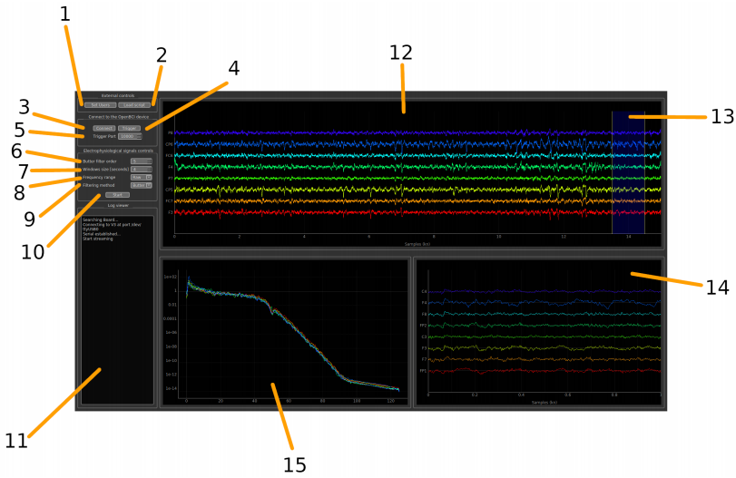
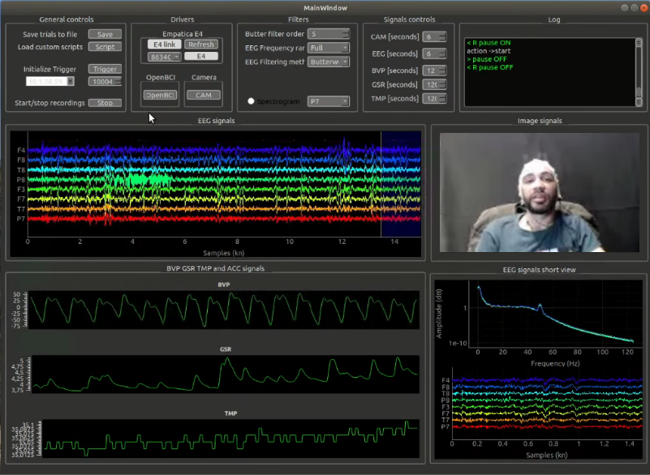

The software behind an experiment
My biotechnology and neuroengineering work spans the tools used to collect data, preserve experimental context and inspect the resulting signals. These projects address different parts of that workflow.
- 01EEGGEERT and MULTI_GEERT
- 02Physiology + videoGePHYCAM and BIOSIGNALS
- 03Neural analysisNeuroSorter
Alongside the software, I designed the concept, hardware, software and experiments for the Horizon Cyber-Vision prototype.
GEERT · EEG experimentation
GEERT brings EEG acquisition, visualisation, signal processing and event labels into a BCI research interface. An external experiment can send start, stop and label messages through TCP/IP; the application coordinates recording and exposes hooks for Python analysis modules.
The key design concern is keeping the recorded signal connected to the experimental task. The repository documents EDF output and a Linux-based environment.


- Application and recording lifecycle ↗Source: acquisition, trigger handling and GUI coordination.
- GEERT repository ↗Documentation, dependencies and research-software citation.
MULTI_GEERT · Multiple EEG streams
MULTI_GEERT extends the acquisition problem to several devices using Lab Streaming Layer. The interface discovers streams, lets the researcher select them and creates a monitor for each chosen EEG inlet.
A separate acquisition process maintains per-stream buffers and state. It retains the timestamp returned with each LSL sample, while remote commands can be distributed to the monitors. The repository also includes a synthetic EEG generator for development without a physical device.
Engineering boundary: retaining timestamps supports alignment; timing accuracy across devices still needs measurement in the actual experiment.
- Acquisition process and per-stream buffers ↗Inspect how samples and timestamps enter the data managers.
- Stream selection and monitor lifecycle ↗Inspect the separation between acquisition and presentation.
- MULTI_GEERT repository ↗Setup, synthetic streams and remote-control protocol.
GePHYCAM · Physiology and video
GePHYCAM brings EEG, peripheral physiological signals and a camera into one experimental interface. Its code separates data managers for OpenBCI, Empatica E4 and video, and coordinates recording through the application controls.
The video manager consumes frames through a queue and maintains its own buffer. The saving path collects data from the separate managers; the documented formats are EDF for physiology and MP4 for video. Event labels provide the behavioural context.


- Video acquisition and buffering ↗Thread, queue and frame storage.
- Recording coordination and saving ↗The shared interface joins the separate data managers.
- GePHYCAM repository ↗Documentation and research-software citation.
BIOSIGNALS and NeuroSorter
BIOSIGNALS focuses on physiological acquisition, event annotations and recording control. Its case study follows the sample-based event timing and storage path.
NeuroSorter addresses the analysis stage: cleaning neural waveforms, grouping spikes and letting the researcher inspect and adjust the result. The inspected interface connects UMAP-based graph construction, Louvain clustering and template comparison.
Research use and evidence
The repositories and screenshots show the implemented workflows. They are research software with version-specific hardware and dependency requirements. This portfolio review inspected the source; it did not reconnect the devices or reproduce timing, classification or clinical validation.
The common engineering thread is making experiments workable: clear component boundaries, retained event information and interfaces that keep the researcher involved.